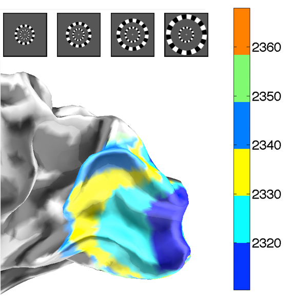

@phdthesis{gramfort:09,
Affiliation = {Telecom ParisTech},
Author = {A Gramfort},
Title = {{Mapping, timing and tracking cortical activations with MEG and
EEG: Methods and application to human vision}},
Url = {http://tel.archives-ouvertes.fr/tel-00426852/fr/},
Year = {2009}
}
| Sous la direction de : | Maureen Clerc et Olivier Faugeras |
| Prix : | Meilleure Thèse EADS dans la catégorie recherche interdisciplinaire. |
Forward Problem
Inverse Problem
Retinotopic mapping

Tracking with graph-cuts
Tracking with graph-cuts
Single-trial analysis